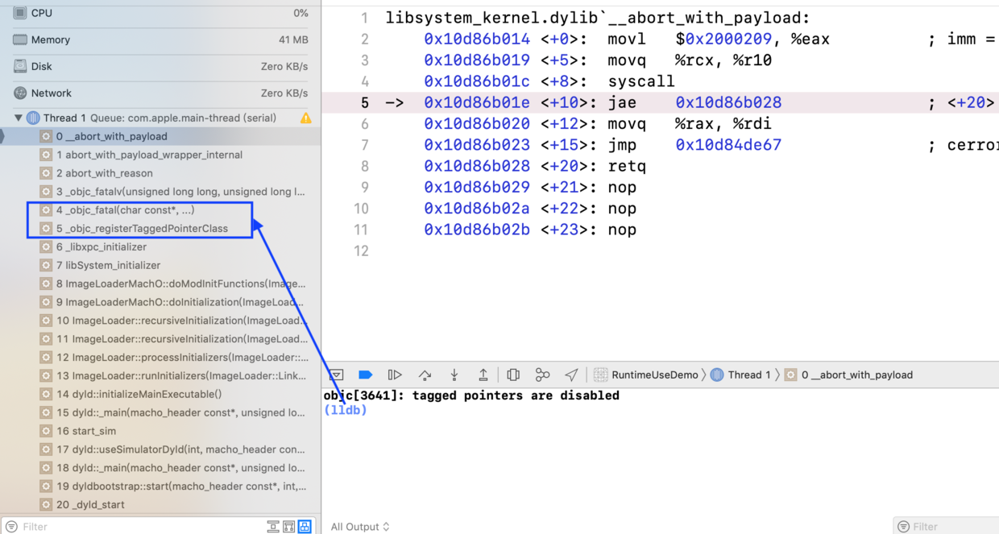
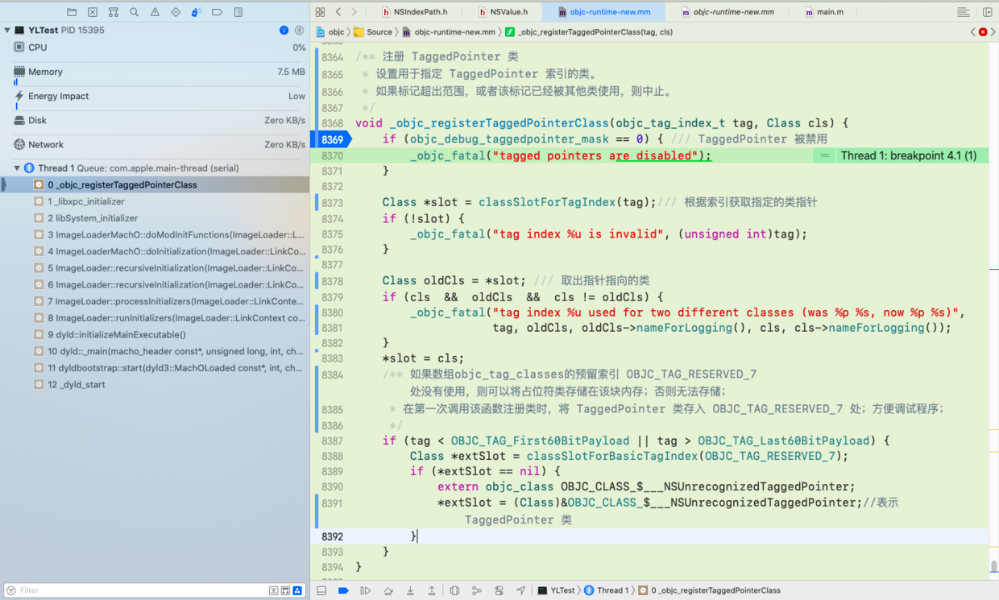
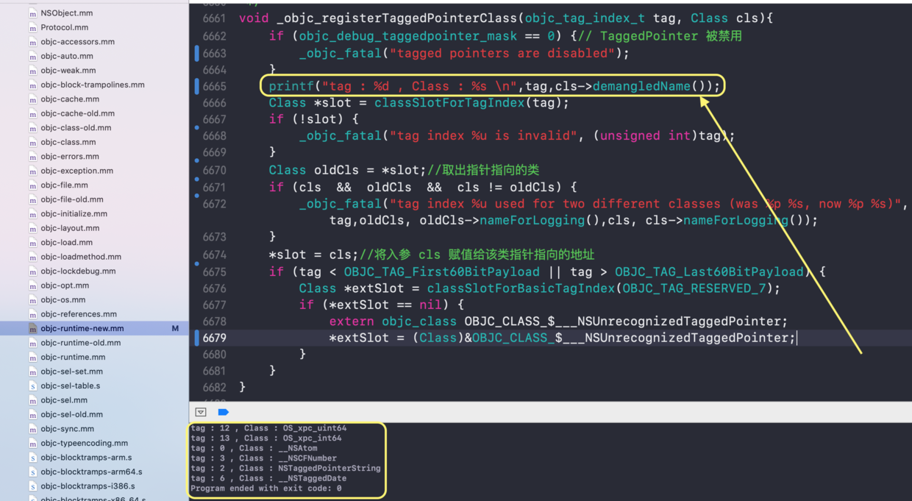

伪指针 Tagged Pointer
1、Tagged Pointer 介绍
1.1、什么是 Tagged Pointer ？
Tagged Pointer 是一个特别的指针，它分为两部分：
- 一部分直接保存数据 ；
- 另一部分作为特殊标记，表示这是一个特别的指针，不指向任何一个地址；
因此，我们说Tagged Pointer 是一个伪指针！
1.2、 Tagged Pointer 出现的背景
对于一个 NSNumber 对象，如果存储NSInteger的普通变量，那么它所占用的内存是与 CPU 的位数有关，在 32 位CPU下占4个字节。而指针类型的大小通常也是与 CPU 位数相关，一个指针所占用的内存在32位CPU下为4个字节。
在2013年9月，苹果推出了iPhone 5s，该款机型首次采用64位架构的A7双核处理器。此时，对于一个NSNumber对象，如果存储NSInteger的普通变量，那么它将占 8 个字节；一个指针也将占用 8 个字节。
对于一个普通的程序而言，从 32 位机器迁移到 64 位机器中后，虽然逻辑没有任何变化，但对于 NSNumber、NSDate、NSString等类型的实例所占用的内存会翻倍、浪费了稀有的内存资源！！同时维护程序中的对象需要也分配内存，维护引用计数，管理生命周期，使用对象给程序的运行增加了负担！！
为了节省内存和提高执行效率，苹果提出了 Tagged Pointer 的概念。苹果将一个对象的指针拆成两部分，一部分直接保存数据，另一部分作为特殊标记，表示这是一个特别的指针，不指向任何一个地址。
1.3、苹果对 Tagged Pointer 的介绍
苹果对于 Tagged Pointer 特点的做出了介绍:
Tagged Pointer被设计的目的是用来存储较小的对象，例如NSNumber、NSDate、NSString等；Tagged Pointer的值不再表示地址，而是真正的值；- 在内存读取上有着3倍的效率，创建时比以前快106倍 ；
1.4、Tagged Pointer 的使用
在一个程序中运行下述代码，获取输出日志：
NSNumber *number = @(0);
NSNumber *number1 = @(1);
NSNumber *number2 = @(2);
NSNumber *number3 = @(9999999999999999999);
NSString *string = [[@"a" mutableCopy] copy];
NSIndexPath *indexPath = [NSIndexPath indexPathForRow:0 inSection:0];
NSLog(@"number ---- %@, %p", [number class], number);
NSLog(@"number1 --- %@, %p", [number1 class], number1);
NSLog(@"number2 --- %@, %p", [number2 class], number2);
NSLog(@"number3 --- %@, %p", [number3 class], number3);
NSLog(@"NSString -- %@, %p", [string class], string);
NSLog(@"indexPath - %@, %p", indexPath.class,indexPath);
/********************* 输出日志 *********************
number ---- __NSCFNumber, 0xb000000000000002
number1 --- __NSCFNumber, 0xb000000000000012
number2 --- __NSCFNumber, 0xb000000000000022
number3 --- __NSCFNumber, 0x600003b791c0
NSString -- NSTaggedPointerString, 0xa000000000000611
indexPath - NSIndexPath, 0xc000000000000016
*/
分析日志：
- 1、
NSNumber存储的数据不大时，NSNumber *指针是伪指针Tagged Pointer； - 2、
NSNumber存储的数据很大时，NSNumber *指针一般指针，指向NSNumber实例的地址，如number3； - 3、
NSTaggedPointerString经常遇见，它就是Tagged Pointer对象；
对于Tagged Pointer ，是系统实现的，无需开发者操心！但是作为开发者，也要知道NSTaggedPointerString等是什么东西！
1.5、Tagged Pointer 的思考
通过上文的概念 + 应用，相信大家对 Tagged Pointer 有了一定的了解；那么大家有没有一些疑问呢？
- 系统是如何将
NSNumber、NSDate、NSString等类型的数据存储在Tagged Pointer上？ - 既然
Tagged Pointer是一个伪指针，不再指向实例对象，那么isa指针就不能再调用！不通过isa指针获取它所属的类，系统是如何知道它存储的数据结构的？ - 数据展示在
Tagged Pointer，可以被人通过Tagged Pointer获取，明显不再安全，那么苹果是如何加密Tagged Pointer上的数据的？
2、Tagged Pointer 的底层探究
苹果设计的 Tagged Pointer 技术，是在 Runtime 库 中实现的。
关于 Tagged Pointer 技术的一些宏定义：
#if !__LP64__ /// 32 位机器，不支持 Tagged Pointer
# define SUPPORT_TAGGED_POINTERS 0
#else
# define SUPPORT_TAGGED_POINTERS 1
#endif
#if __arm64__
// ARM64 指令集使用了一种新的 TaggedPointers 方案：普通标记位于低位，扩展标记位于高位，并且一半的扩展标记空间预留给未混淆的有效负载
# define OBJC_SPLIT_TAGGED_POINTERS 1
#else
# define OBJC_SPLIT_TAGGED_POINTERS 0
#endif
#if (TARGET_OS_OSX || TARGET_OS_MACCATALYST) && __x86_64__
// 64 位的 Mac - tag bit is LSB
# define OBJC_MSB_TAGGED_POINTERS 0
#else
// 其余系统 - tag bit is MSB
# define OBJC_MSB_TAGGED_POINTERS 1
#endif
2.1、Tagged Pointer 技术的启用与禁用
苹果预留了环境变量 OBJC_DISABLE_TAGGED_POINTERS，通过设置该变量的布尔值，可以将Tagged Pointer 技术的启用与关闭的决定权交给开发者！
如果禁用Tagged Pointer ，只需设置环境变量 OBJC_DISABLE_TAGGED_POINTERS为YES 即可！
2.1.1、Tagged Pointer 的禁用函数
Runtime 库 的 objc-runtime-new.mm文件中有一个禁用Tagged Pointer 的函数：
static void disableTaggedPointers(){
objc_debug_taggedpointer_mask = 0;
objc_debug_taggedpointer_slot_shift = 0;
objc_debug_taggedpointer_slot_mask = 0;
objc_debug_taggedpointer_payload_lshift = 0;
objc_debug_taggedpointer_payload_rshift = 0;
objc_debug_taggedpointer_ext_mask = 0;
objc_debug_taggedpointer_ext_slot_shift = 0;
objc_debug_taggedpointer_ext_slot_mask = 0;
objc_debug_taggedpointer_ext_payload_lshift = 0;
objc_debug_taggedpointer_ext_payload_rshift = 0;
}
在该函数内部，将一些列变量全部设置为 0 ！至于这些变量都有什么用处，我们后文用到了再解释！
2.1.2、何时调用 disableTaggedPointers() 函数?
何时调用 disableTaggedPointers() 函数禁用 Tagged Pointer 呢？
还是在 objc-runtime-new.mm 文件中，在大名鼎鼎的 _read_images() 函数中有一处关键代码：
/// 注意：由于_read_images() 函数中完成了大量的初始化操作，我们在此处省略大量无关代码，
void _read_images(header_info **hList, uint32_t hCount, int totalClasses, int unoptimizedTotalClasses){
//禁用NSNumber等的 Tagged Pointer 指针优化
if (DisableTaggedPointers) {
disableTaggedPointers();
}
//初始化 TaggedPointer 混淆器：用于保护 Tagged Pointer 上的数据
initializeTaggedPointerObfuscator();
}
可以看到，首先判断Tagged Pointer 是否被禁用，如果被禁用，才调用disableTaggedPointers()函数将Tagged Pointer 相关变量全部设置为 0。
OPTION( DisableTaggedPointers, OBJC_DISABLE_TAGGED_POINTERS, "disable tagged pointer optimization of NSNumber et al.")
判断 Tagged Pointer 时，使用的是预定义的宏 OPTION！本质是获取环境变量 OBJC_DISABLE_TAGGED_POINTERS的值，设置该变量为 YES，则Tagged Pointer 被禁用。
2.1.3、判断是否禁用的函数
static inline bool _objc_taggedPointersEnabled(void){
extern uintptr_t objc_debug_taggedpointer_mask;
return (objc_debug_taggedpointer_mask != 0);
}
DisableTaggedPointers通过环境变量OBJC_DISABLE_TAGGED_POINTERS来判断是否使用Tagged Pointer；- 函数
_objc_taggedPointersEnabled()通过全局变量objc_debug_taggedpointer_mask判断是否使用Tagged Pointer。
2.1.4、能否禁用？
可能有的读者去测试 OBJC_DISABLE_TAGGED_POINTERS 为 YES 时，发现程序报错：
objc[3658]: tagged pointers are disabled
Message from debugger: Terminated due to signal 9
既然苹果给了OBJC_DISABLE_TAGGED_POINTERS这个环境变量让我们设置，为何程序还无法启动呢？分析下图错误堆栈：

在调用栈中发现了Runtime 库 杀手 _objc_fatal()函数，该函数一言不合就杀死进程！可以看到，是_objc_registerTaggedPointerClass() 函数请求_objc_fatal()杀死程序的！
那么_objc_registerTaggedPointerClass() 函数是什么呢？它凭什么一言不合就杀死程序？我们下节分析！
2.2、注册成为Tagged Pointer
为什么NSNumber、NSDate、NSString等类型可以自动转为Tagged Pointer ？而UIViewController就不能自动转化呢？这就要说到上节遗留的_objc_registerTaggedPointerClass() 函数了！！

加载程序时，从 dyld2 库 的_dyld_start()函数开始，经历了多般步骤，开始调用_objc_registerTaggedPointerClass() 函数！
在讲解_objc_registerTaggedPointerClass() 函数之前先说说题外话：classSlotForBasicTagIndex() 函数与 classSlotForTagIndex() 函数！
2.2.1、classSlotForBasicTagIndex() 函数
static Class *classSlotForBasicTagIndex(objc_tag_index_t tag){
uintptr_t tagObfuscator = ((objc_debug_taggedpointer_obfuscator >> _OBJC_TAG_INDEX_SHIFT) & _OBJC_TAG_INDEX_MASK);
uintptr_t obfuscatedTag = tag ^ tagObfuscator;
// objc_tag_classes 数组的索引包含标记的位本身
#if SUPPORT_MSB_TAGGED_POINTERS//高位优先
return &objc_tag_classes[0x8 | obfuscatedTag];
#else
return &objc_tag_classes[(obfuscatedTag << 1) | 1];
#endif
}
classSlotForBasicTagIndex() 函数的主要功能就是根据指定索引 tag 从数组 objc_tag_classes中获取类指针；该函数要求索引tag是个有效的索引！
注：可能大家会对 objc_debug_taggedpointer_obfuscator 产生疑惑，这个东西是什么?是用来干嘛的？别急，在此处不影响该函数的功能，后文用到了我们再讲！
a、这里有两个重要的全局变量数组：
#if SUPPORT_TAGGED_POINTERS //支持 Tagged Pointer
extern "C" {
extern Class objc_debug_taggedpointer_classes[_OBJC_TAG_SLOT_COUNT*2];
extern Class objc_debug_taggedpointer_ext_classes[_OBJC_TAG_EXT_SLOT_COUNT];
}
#define objc_tag_classes objc_debug_taggedpointer_classes
#define objc_tag_ext_classes objc_debug_taggedpointer_ext_classes
#endif
- 数组
objc_tag_classes：存储苹果定义的几个基础类； - 数组
objc_tag_ext_classes：存储苹果预留的扩展类；
b、数组 objc_debug_taggedpointer_classes 与 objc_debug_taggedpointer_ext_classes 的初始化
笔者在 Runtime 库 的objc-msg-armXX.s文件发现了相关代码：
#if SUPPORT_TAGGED_POINTERS
.data
.align 3
.globl _objc_debug_taggedpointer_classes
_objc_debug_taggedpointer_classes:
.fill 16, 8, 0
.globl _objc_debug_taggedpointer_ext_classes
_objc_debug_taggedpointer_ext_classes:
.fill 256, 8, 0
#endif
注：在别的地方没有关于这两个数组的代码，笔者怀疑这俩个数组在此处被初始化的！如果有大神认为笔者错了，这俩个数组的初始化另有地方，还望告知！
2.2.2、classSlotForTagIndex() 函数
static Class *classSlotForTagIndex(objc_tag_index_t tag){
if (tag >= OBJC_TAG_First60BitPayload && tag <= OBJC_TAG_Last60BitPayload) {
return classSlotForBasicTagIndex(tag);
}
if (tag >= OBJC_TAG_First52BitPayload && tag <= OBJC_TAG_Last52BitPayload) {
int index = tag - OBJC_TAG_First52BitPayload;
uintptr_t tagObfuscator = ((objc_debug_taggedpointer_obfuscator >> _OBJC_TAG_EXT_INDEX_SHIFT)& _OBJC_TAG_EXT_INDEX_MASK);
return &objc_tag_ext_classes[index ^ tagObfuscator];
}
return nil;
}
该函数的主要功能就是根据指定索引 tag 获取类指针：
- 当索引
tag为基础类的索引时，去数组objc_tag_classes中取数据； - 当索引
tag为扩展类的索引时，去数组objc_tag_ext_classes中取数据； - 当索引
tag无效时，返回一个nil；
2.2.3、索引objc_tag_index_t
classSlotForBasicTagIndex() 函数与classSlotForTagIndex() 函数的本质就是获取数组objc_tag_classes与数组objc_tag_ext_classes中的数据！
那么它的索引 objc_tag_index_t 是何方神圣呢？
在 Runtime 库 的 objc-internal.h文件中找到了 objc_tag_index_t的定义：
//有关于标志位的枚举如下：
#if __has_feature(objc_fixed_enum) || __cplusplus >= 201103L
enum objc_tag_index_t : uint16_t
#else
typedef uint16_t objc_tag_index_t;//无符号短整型
enum
#endif
{
// 60位净负荷
OBJC_TAG_NSAtom = 0,
OBJC_TAG_1 = 1,
OBJC_TAG_NSString = 2, //表示这是一个NSString对象
OBJC_TAG_NSNumber = 3, //表示这是一个NSNumber对象
OBJC_TAG_NSIndexPath = 4, //表示这是一个NSIndexPath对象
OBJC_TAG_NSManagedObjectID = 5,
OBJC_TAG_NSDate = 6,//表示这是一个NSDate对象
OBJC_TAG_RESERVED_7 = 7, //60位净负荷： 索引 7 被保留
// 52 位净负荷
OBJC_TAG_Photos_1 = 8,
OBJC_TAG_Photos_2 = 9,
OBJC_TAG_Photos_3 = 10,
OBJC_TAG_Photos_4 = 11,
OBJC_TAG_XPC_1 = 12,
OBJC_TAG_XPC_2 = 13,
OBJC_TAG_XPC_3 = 14,
OBJC_TAG_XPC_4 = 15,
OBJC_TAG_First60BitPayload = 0,
OBJC_TAG_Last60BitPayload = 6,
OBJC_TAG_First52BitPayload = 8, // 52 位净负荷的开始处
OBJC_TAG_Last52BitPayload = 263, // 52 位净负荷的结束处
OBJC_TAG_RESERVED_264 = 264 // 52 位净负荷： 索引 264 被保留
};
#if __has_feature(objc_fixed_enum) && !defined(__cplusplus)
typedef enum objc_tag_index_t objc_tag_index_t;
#endif
objc_tag_index_t 就是个枚举变量，存储在 Tagged Pointer 的特殊标记的部位！
Runtime 就是根据
objc_tag_index_t的枚举值判断Tagged Pointer存储的是NSString对象或者NSNumber对象...
2.2.4、_objc_registerTaggedPointerClass() 函数
现在知道了classSlotForBasicTagIndex() 函数与classSlotForTagIndex() 函数的本质就是获取数组objc_tag_classes与数组objc_tag_ext_classes中的数据！而索引 objc_tag_index_t 又用来在Tagged Pointer 对象标记存储的类！
准备工作已经做足，现在去分析_objc_registerTaggedPointerClass()函数！ 在 Runtime 库 的 objc-runtime-new.mm文件中找到该函数的实现：
void _objc_registerTaggedPointerClass(objc_tag_index_t tag, Class cls){
if (objc_debug_taggedpointer_mask == 0) {
_objc_fatal("tagged pointers are disabled");
}
Class *slot = classSlotForTagIndex(tag);//根据索引获取指定的类指针
if (!slot) {
_objc_fatal("tag index %u is invalid", (unsigned int)tag);
}
Class oldCls = *slot;//取出指针指向的类
if (cls && oldCls && cls != oldCls) {
//指定的索引被用于两个不同的类，终止程序
_objc_fatal("tag index %u used for two different classes (was %p %s, now %p %s)", tag,oldCls, oldCls->nameForLogging(),cls, cls->nameForLogging());
}
*slot = cls;//将入参 cls 赋值给该类指针指向的地址
if (tag < OBJC_TAG_First60BitPayload || tag > OBJC_TAG_Last60BitPayload) {
Class *extSlot = classSlotForBasicTagIndex(OBJC_TAG_RESERVED_7);
if (*extSlot == nil) {
extern objc_class OBJC_CLASS_$___NSUnrecognizedTaggedPointer;
*extSlot = (Class)&OBJC_CLASS_$___NSUnrecognizedTaggedPointer;//表示 TaggedPointer 类
}
}
}
分析该函数的实现：
- 1、首先判断
objc_debug_taggedpointer_mask是否为 0 ，也就是判断开发者是否把OBJC_DISABLE_TAGGED_POINTERS设置为YES；如果禁用了Tagged Pointer，那么不好意思，直接调用_objc_fatal()函数终止该程序，不让该程序启动！ 只有启用Tagged Pointer，程序才有执行下去的意义！ - 2、根据索引
tag去取出数组objc_tag_classes或数组objc_tag_ext_classes中指定的类指针classSlotForTagIndex(tag)： 如果传递无效的索引tag，获取一个nil，还是要调用_objc_fatal()终止该程序； - 3、尝试着去获取该指针指向的类
Class oldCls = *slot：如果要注册的类和该处的类不是同一个？不好意思，_objc_fatal()终止程序！ 只有类指针slot指向的位置为NULL，或者类指针slot指向的位置就是存储着我们要注册的类，系统才能安稳的运行下去； - 4、将入参
cls赋值给类指针slot指向的位置*slot = cls；到此，该函数的功能经过重重考验就已经实现了！ - 5、假如注册的不是基础类，而是第一次注册扩展类，该函数还有个额外功能：在
OBJC_TAG_RESERVED_7出存储占位类OBJC_CLASS_$___NSUnrecognizedTaggedPointer
2.2.5、打印系统注册的Tagged Pointer
不妨在_objc_registerTaggedPointerClass()函数中插入一条 print()语句，打印出系统注册的Tagged Pointer ，如下图所示：

观察打印日志，可以得知NSNumber、NSString等确实在启动程序时，被系统注册！
2.2.6、获取_objc_registerTaggedPointerClass()函数调用栈
在_objc_registerTaggedPointerClass()函数打一个断点，打印该线程栈信息：
(lldb) thread backtrace
* thread #1, queue = 'com.apple.main-thread', stop reason = breakpoint 1.1
* frame #0: 0x0000000100382213 libobjc.A.dylib`::_objc_registerTaggedPointerClass(tag=OBJC_TAG_NSNumber, cls=__NSCFNumber) at objc-runtime-new.mm:6668
frame #1: 0x00007fff433a0b5b CoreFoundation`__CFNumberGetTypeID_block_invoke + 65
frame #2: 0x0000000100d087c3 libdispatch.dylib`_dispatch_client_callout + 8
frame #3: 0x0000000100d0a48b libdispatch.dylib`_dispatch_once_callout + 87
frame #4: 0x00007fff433a0b17 CoreFoundation`CFNumberGetTypeID + 39
frame #5: 0x00007fff433a0103 CoreFoundation`__CFInitialize + 715
frame #6: 0x0000000100020a68 dyld`ImageLoaderMachO::doImageInit(ImageLoader::LinkContext const&) + 316
frame #7: 0x0000000100020ebb dyld`ImageLoaderMachO::doInitialization(ImageLoader::LinkContext const&) + 29
frame #8: 0x000000010001c0da dyld`ImageLoader::recursiveInitialization(ImageLoader::LinkContext const&, unsigned int, char const*, ImageLoader::InitializerTimingList&, ImageLoader::UninitedUpwards&) + 358
frame #9: 0x000000010001c06d dyld`ImageLoader::recursiveInitialization(ImageLoader::LinkContext const&, unsigned int, char const*, ImageLoader::InitializerTimingList&, ImageLoader::UninitedUpwards&) + 249
frame #10: 0x000000010001c06d dyld`ImageLoader::recursiveInitialization(ImageLoader::LinkContext const&, unsigned int, char const*, ImageLoader::InitializerTimingList&, ImageLoader::UninitedUpwards&) + 249
frame #11: 0x000000010001c06d dyld`ImageLoader::recursiveInitialization(ImageLoader::LinkContext const&, unsigned int, char const*, ImageLoader::InitializerTimingList&, ImageLoader::UninitedUpwards&) + 249
frame #12: 0x000000010001b254 dyld`ImageLoader::processInitializers(ImageLoader::LinkContext const&, unsigned int, ImageLoader::InitializerTimingList&, ImageLoader::UninitedUpwards&) + 134
frame #13: 0x000000010001b2e8 dyld`ImageLoader::runInitializers(ImageLoader::LinkContext const&, ImageLoader::InitializerTimingList&) + 74
frame #14: 0x000000010000a756 dyld`dyld::initializeMainExecutable() + 169
frame #15: 0x000000010000f78f dyld`dyld::_main(macho_header const*, unsigned long, int, char const**, char const**, char const**, unsigned long*) + 6237
frame #16: 0x00000001000094f6 dyld`dyldbootstrap::start(macho_header const*, int, char const**, long, macho_header const*, unsigned long*) + 1154
frame #17: 0x0000000100009036 dyld`_dyld_start + 54
具体的调用信息如上所示，这里不再过多啰嗦！
至此，笔者已经讲完了注册为Tagged Pointer 的流程！
2.3、判断一个指针是否是 Tagged Pointer
Tagged Pointer 之所以特殊，是因为它有个标记位表明它是特殊指针，那么该如何判断这个特殊的标记呢？
在 Runtime 库 的 objc-internal.h文件中找到了 _objc_isTaggedPointer()的实现：
static inline bool _objc_isTaggedPointer(const void * _Nullable ptr){
//将一个指针地址和 _OBJC_TAG_MASK 常量做 & 运算：判断该指针的最高位或者最低位为 1，那么这个指针就是 Tagged Pointer。
return ((uintptr_t)ptr & _OBJC_TAG_MASK) == _OBJC_TAG_MASK;
}
该函数将 指针ptr 与 _OBJC_TAG_MASK 做了按位与 运算，这个运算有什么意义呢？我们先看下_OBJC_TAG_MASK 的定义：
#if OBJC_MSB_TAGGED_POINTERS //MSB 高位优先
# define _OBJC_TAG_MASK (1UL<<63) //Tagged Pointer 指针
#else //LSB 低位优先
# define _OBJC_TAG_MASK 1UL //Tagged Pointer 指针
#endif
对于 iOS 系统而言，遵循 MSB 规则（高位优先）！因此_OBJC_TAG_MASK的值为 0x8000000000000000：一个64 位的二进制，最左边一位是 1，其余位全是 0！
在 64 位系统中，使用指针很难将有限的 CPU 资源耗尽；因此 64 位还有很大的剩余！ 苹果将64中的最左边一位（MSB 时）标记是 1 ，或者最右边一位（LSB 时）标记是 1 ，以此来表示这个指针是
Tagged Pointer。
因此 ptr & _OBJC_TAG_MASK) 按位与 运算后可以判断它的标志位是否是 1，即是否是 Tagged Pointer ！
2.4、在伪指针 Tagged Pointer 存储数据
讲了半天：又是禁用 Tagged Pointer 、又是注册 Tagged Pointer 、又是判断 Tagged Pointer 的 ！ 那么到底怎么存储NSNumber、NSDate、NSString等类型的数据呢？
在 Runtime 库 的 objc-internal.h文件中找到了 _objc_makeTaggedPointer() 函数的实现：
static inline void * _Nonnull _objc_makeTaggedPointer(objc_tag_index_t tag, uintptr_t value){
if (tag <= OBJC_TAG_Last60BitPayload) {//如果是基础的索引
uintptr_t result = (_OBJC_TAG_MASK | ((uintptr_t)tag << _OBJC_TAG_INDEX_SHIFT) | ((value << _OBJC_TAG_PAYLOAD_RSHIFT) >> _OBJC_TAG_PAYLOAD_LSHIFT));
return _objc_encodeTaggedPointer(result);
} else {//如果是扩展的索引
uintptr_t result = (_OBJC_TAG_EXT_MASK | ((uintptr_t)(tag - OBJC_TAG_First52BitPayload) << _OBJC_TAG_EXT_INDEX_SHIFT) | ((value << _OBJC_TAG_EXT_PAYLOAD_RSHIFT) >> _OBJC_TAG_EXT_PAYLOAD_LSHIFT));
return _objc_encodeTaggedPointer(result);
}
}
该函数将 value 位运算，然后再编码 _objc_encodeTaggedPointer()，就是指针的值！
a、尝试计算
#if OBJC_MSB_TAGGED_POINTERS //MSB 高位优先
# define _OBJC_TAG_MASK (1UL<<63) //Tagged Pointer 指针
# define _OBJC_TAG_INDEX_SHIFT 60
# define _OBJC_TAG_SLOT_SHIFT 60
# define _OBJC_TAG_PAYLOAD_LSHIFT 4
# define _OBJC_TAG_PAYLOAD_RSHIFT 4
# define _OBJC_TAG_EXT_MASK (0xfUL<<60)
# define _OBJC_TAG_EXT_INDEX_SHIFT 52
# define _OBJC_TAG_EXT_SLOT_SHIFT 52
# define _OBJC_TAG_EXT_PAYLOAD_LSHIFT 12
# define _OBJC_TAG_EXT_PAYLOAD_RSHIFT 12
#else //LSB 低位优先
# define _OBJC_TAG_MASK 1UL //Tagged Pointer 指针
# define _OBJC_TAG_INDEX_SHIFT 1
# define _OBJC_TAG_SLOT_SHIFT 0
# define _OBJC_TAG_PAYLOAD_LSHIFT 0
# define _OBJC_TAG_PAYLOAD_RSHIFT 4
# define _OBJC_TAG_EXT_MASK 0xfUL
# define _OBJC_TAG_EXT_INDEX_SHIFT 4
# define _OBJC_TAG_EXT_SLOT_SHIFT 4
# define _OBJC_TAG_EXT_PAYLOAD_LSHIFT 0
# define _OBJC_TAG_EXT_PAYLOAD_RSHIFT 12
#endif
我们以 1.4 节 中的NSNumber为例尝试计算一下：当存储整数0 时Tagged Pointer 的值为0xb000000000000002！（以MSB 规则计算）
由于NSNumber为基础类，它的索引为 OBJC_TAG_NSNumber=3，所以 tag <= OBJC_TAG_Last60BitPayload：
- 1、
_OBJC_TAG_MASK取值0x8000000000000000； - 2、
tag << _OBJC_TAG_INDEX_SHIFT转为0x3 << 60，位运算结果是0x3000000000000000；该运算的目的是将类的标识符存储在标志位里； - 3、
_OBJC_TAG_MASK | ((uintptr_t)tag << _OBJC_TAG_INDEX_SHIFT)转为0x8000000000000000 | 0x3000000000000000，位运算结果是0xb000000000000000；该结果就是Tagged Pointer的标记； - 4、
(value << _OBJC_TAG_PAYLOAD_RSHIFT) >> _OBJC_TAG_PAYLOAD_LSHIFT)： - 5、先来说说
(value << _OBJC_TAG_PAYLOAD_RSHIFT)，将value左移 4 位，为何是 4 位？因为有 4 位标识符，最右边一位的1是Tagged Pointer的标志，剩余三位是存储类的识别！ - 6、再来说说
>> _OBJC_TAG_PAYLOAD_LSHIFT)，将第 5 步的位运算结果右移_OBJC_TAG_PAYLOAD_LSHIFT遵循 MSB 时右移 4 位，因为4 位标识符在最左边，即最左边 4 位不能用来表示值！ 遵循 LSB 时右移 0 位，因为4 位标识符在最右边，即最右边 4 位不能用来表示值！ - 7、第4步公式转为
(0<<4)>>0计算结果是：0 - 8、最终
result结果是0xb000000000000000！！
疑问：程序运行的是 0xb000000000000002，但为何计算的是0xb000000000000000？该处问题笔者暂时没有找到答案，如果有大神知道为何不同，怎么计算，还望告知！！
b、编码与解码 Tagged Pointer 指针的函数
/* 编码 TaggedPointer 指针
*/
static inline void * _Nonnull _objc_encodeTaggedPointer(uintptr_t ptr){
return (void *)(objc_debug_taggedpointer_obfuscator ^ ptr);
}
/* 解码 TaggedPointer 指针
* @param ptr 编码后的 TaggedPointer 指针
*/
static inline uintptr_t _objc_decodeTaggedPointer(const void * _Nullable ptr){
return (uintptr_t)ptr ^ objc_debug_taggedpointer_obfuscator;
}
注：此处又出现了变量objc_debug_taggedpointer_obfuscator，在该处的取值为 0 ，至于作用，后文再讲！
通过一步步计算可知，Tagged Pointer 指针上存储的数据我们完全能够计算出来，此时数据暴露在外，及其危险！苹果为了数据安全问题，设计了数据混淆！
2.5、Tagged Pointer 的数据混淆
在 2.1.2 节的_read_images()函数中还遗留了 initializeTaggedPointerObfuscator()没有讲解，现在来说说它的作用。
在 Runtime 库 的 objc-runtime-new.mm文件中找到该函数的实现：
static void initializeTaggedPointerObfuscator(void){
if (sdkIsOlderThan(10_14, 12_0, 12_0, 5_0, 3_0) || DisableTaggedPointerObfuscation) {
// 对于链接到旧sdk的应用程序，如果它们依赖于tagged pointer表示，将混淆器设置为0，
objc_debug_taggedpointer_obfuscator = 0;
} else {
// 将随机数据放入变量中，然后移走所有非净负荷位。
arc4random_buf(&objc_debug_taggedpointer_obfuscator,
sizeof(objc_debug_taggedpointer_obfuscator));
objc_debug_taggedpointer_obfuscator &= ~_OBJC_TAG_MASK;
}
}
该函数的主要功能：
- 如果SDK版本过低，或者禁用混淆，则设置
objc_debug_taggedpointer_obfuscator为 0； - 否则为
objc_debug_taggedpointer_obfuscator设置一个随机数；
前文遗留的objc_debug_taggedpointer_obfuscator是什么，到此终于有了明确的定义：该变量就是一个随机生成的数字，通过编码函数、或者解码函数，用来与 value做位运算，这样控制台就看不出是否是Tagged Pointer 指针，该指针存储的数据也是安全的！
2.5.1、Tagged Pointer 数据混淆功能的开启与关闭
OPTION( DisableTaggedPointerObfuscation, OBJC_DISABLE_TAG_OBFUSCATION, "disable obfuscation of tagged pointers")
通过设置环境变量OBJC_DISABLE_TAG_OBFUSCATION为 YES，可以关闭Tagged Pointer 的数据混淆，方便我们调试程序！
2.5.2、objc_debug_taggedpointer_obfuscator的使用
除了上文的编码解码函数使用了objc_debug_taggedpointer_obfuscator来混淆指针，还有最前文提到的通过指定索引tag获取类指针时使用objc_debug_taggedpointer_obfuscator。
2.6、获取Tagged Pointer 的数据
前文讲解了如何存储Tagged Pointer 的数据，如何加密Tagged Pointer 的数据！现在我们来看下如何获取Tagged Pointer 的数据！
在 Runtime 库 的 objc-internal.h文件中找到相关函数的实现：
/* 获取 Tagged Pointer 指针上存储的数据
* @note 存储的数据是 zero-extended
* @note 前提条件：假设启用了 tagged pointer 功能
*/
static inline uintptr_t _objc_getTaggedPointerValue(const void * _Nullable ptr){
// assert(_objc_isTaggedPointer(ptr));
uintptr_t value = _objc_decodeTaggedPointer(ptr);// 解码 TaggedPointer 指针
uintptr_t basicTag = (value >> _OBJC_TAG_INDEX_SHIFT) & _OBJC_TAG_INDEX_MASK;
if (basicTag == _OBJC_TAG_INDEX_MASK) {
return (value << _OBJC_TAG_EXT_PAYLOAD_LSHIFT) >> _OBJC_TAG_EXT_PAYLOAD_RSHIFT;
} else {
return (value << _OBJC_TAG_PAYLOAD_LSHIFT) >> _OBJC_TAG_PAYLOAD_RSHIFT;
}
}
/* 获取 Tagged Pointer 指针上存储的数据
* @note 存储的数据是 sign-extended
* @note 前提条件：假设启用了 tagged pointer 功能
*/
static inline intptr_t _objc_getTaggedPointerSignedValue(const void * _Nullable ptr){
// assert(_objc_isTaggedPointer(ptr));
uintptr_t value = _objc_decodeTaggedPointer(ptr);
uintptr_t basicTag = (value >> _OBJC_TAG_INDEX_SHIFT) & _OBJC_TAG_INDEX_MASK;
if (basicTag == _OBJC_TAG_INDEX_MASK) {
return ((intptr_t)value << _OBJC_TAG_EXT_PAYLOAD_LSHIFT) >> _OBJC_TAG_EXT_PAYLOAD_RSHIFT;
} else {
return ((intptr_t)value << _OBJC_TAG_PAYLOAD_LSHIFT) >> _OBJC_TAG_PAYLOAD_RSHIFT;
}
}
2.7、Tagged Pointer 其他函数
/* 获取一个 Tagged Pointer 指针的索引
* @param ptr 指定的指针
*/
static inline objc_tag_index_t _objc_getTaggedPointerTag(const void * _Nullable ptr){
// assert(_objc_isTaggedPointer(ptr));
uintptr_t value = _objc_decodeTaggedPointer(ptr);
uintptr_t basicTag = (value >> _OBJC_TAG_INDEX_SHIFT) & _OBJC_TAG_INDEX_MASK;
uintptr_t extTag = (value >> _OBJC_TAG_EXT_INDEX_SHIFT) & _OBJC_TAG_EXT_INDEX_MASK;
if (basicTag == _OBJC_TAG_INDEX_MASK) {
return (objc_tag_index_t)(extTag + OBJC_TAG_First52BitPayload);
} else {
return (objc_tag_index_t)basicTag;
}
}
/* 根据指定的索引获取 Tagged Pointer 表示的类
* @param tag 指定的索引
* @return 如果该索引还没有使用 或 该索引超出范围，则返回nil。
*/
Class _objc_getClassForTag(objc_tag_index_t tag){
Class *slot = classSlotForTagIndex(tag);
if (slot) return *slot;
else return nil;
}
至此，关于 伪指针Tagged Pointer，笔者已经讲完！